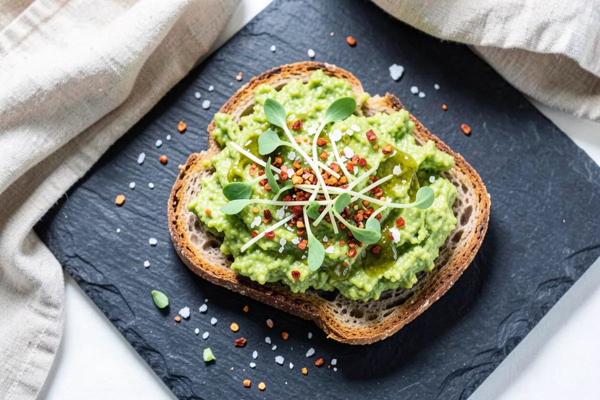

Smashed Avocado Toast

Illustrative image.
Avocado toast lives or dies on two things: bread that is properly toasted and avocado that is seasoned like a vegetable rather than a garnish. This version keeps it simple, with lemon for brightness, a little garlic and a pinch of chili flakes over the top.
It takes about ten minutes and needs no special equipment beyond a toaster and a fork. The recipe below makes two thick slices, which is a filling breakfast on its own or a light lunch with a handful of greens alongside.
Ingredients
- 2 thick slices artisanal sourdough bread
- 1 ripe avocado
- 1 tbsp fresh lemon juice
- 1 small clove garlic, minced (optional)
- Salt and pepper, to taste
- 1/4 tsp red chili flakes
- Handful of microgreens
- Drizzle of extra virgin olive oil
Instructions
- Toast the sourdough slices until golden and crisp all the way through.
- Halve the avocado, remove the pit and scoop the flesh into a bowl. Add the lemon juice, garlic if using, salt and pepper, and mash with a fork until creamy but still slightly chunky.
- Spread the avocado generously over the warm toast, right to the edges.
- Sprinkle with chili flakes and top with a handful of microgreens.
- Finish with a light drizzle of olive oil and serve immediately.
- Season the avocado well. Salt makes a big difference to flavor.
- Toast the bread until it is properly crisp, and spread the avocado while the toast is still warm.
- Rubbing a cut garlic clove over the hot toast gives a milder garlic flavor than mincing it into the avocado.
- Mash just before serving for the best color and texture.
- Top with a soft-boiled or fried egg for a heartier meal.
- Add sliced cherry tomatoes, thinly sliced radish or cucumber.
- Crumble feta or goat cheese on top.
- Use everything bagel seasoning in place of the chili flakes.
- Add a squeeze of hot sauce or a pinch of smoked paprika.
Why this recipe works
Sourdough has a sturdy crumb that holds up under a heavy topping without going limp. Toasting it until the surface is genuinely crisp, not just warm, creates a barrier so the avocado does not soak through. Mashing the avocado with a fork rather than blending it leaves some texture, which feels more like a topping and less like a spread.
Tips for success
- Choose an avocado that gives slightly when you press the stem end. Rock-hard fruit will taste grassy and firm even after mashing.
- Salt the avocado more than feels reasonable, then taste. Cold, fatty spreads need a lot of seasoning before they come alive.
- Add the lemon juice at the last moment. Acid keeps the avocado green, and the colour fades quickly once it is exposed to air.
Substitutions that work
- Any firm, well-crusted loaf works: country sourdough, ciabatta or a seeded rye. Soft sandwich bread tends to collapse.
- No microgreens? Use thinly sliced radish, watercress or a few torn basil leaves for the fresh element on top.
- Greek yogurt stirred into the avocado makes a lighter, tangier spread and stretches one avocado across three slices.
Storage and make-ahead
Avocado toast does not keep; assemble it when you plan to eat it. If you have half an avocado left over, press plastic wrap directly onto the surface, keep the pit in, and use it within a day. Mashed avocado with extra lemon holds for a few hours in a small airtight container.
Serving suggestions
Top it with a fried or soft-boiled egg to turn it into a proper meal, or add sliced tomato and flaky salt. It sits well next to a bowl of berries or a small green salad on a weekend morning.
Frequently asked questions
How do I stop avocado toast going soggy?
Toast the bread until it is crisp all the way through and spread the avocado on while the toast is still warm. A very thin layer of butter or olive oil on the toast also helps keep the bread dry.
Is it better to mash or slice the avocado?
Either works. Mashing with a fork and a pinch of salt gives a creamier texture, while slices look neater and hold their shape on the toast.
Can I make this without garlic?
Yes. The garlic is optional, and rubbing a cut clove over the hot toast gives a much milder flavour than mixing raw garlic into the avocado.